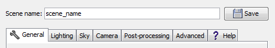
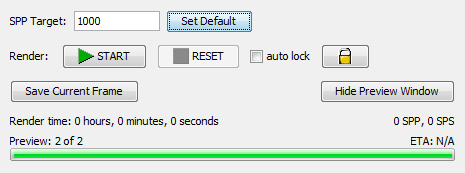

Search Documentation
Search Documentation
- About
 Gallery
Gallery- Getting Started
- User Interface
- Documentation
- Community
- Resources
Render Controls — Global
General | Lighting | Sky | Camera | Post-Processing | Advanced | Global

- Scene Name
- Saves the scene currently open in the renderer with the name provided in the "Scene Name" field to the active directory. This directory is specified when the scene is first created. Use the 'Open Scene Directory' button under the General Tab to quickly access the active directory. To change the directory in which scene resides, you'll need to manually copy all the files associated with the scene to a new directory and relaunch the Render Controls with the copied scene file.

- SPP Target
- Defines the targeted number of samples per pixel. Once Chunky has reached the targeted amount it will save a rendered frame and render dump files.
- Set Default
- Sets the default SPP target to the value entered in the SPP Target field.
- Start / Pause / Resume
- This button will start the path tracing render. If Chunky is already rendering, this button will change to say 'Pause', and will pause the render. When render is paused, this button will change to say 'Resume', and will let Chunky continue rendering.
- Reset
- This button will cancel the rendering process and reset the SPP count to 0. Any progress made since the scene was last saved will be lost, it is recommended to save the scene before clicking this button.
- Auto Lock
- Toggles whether the UI automatically locks during renders. Clicking the Lock symbol will manually lock the UI.
- Save Current Frame
- To save the currently showing frame to an image file. This will not save the whole scene to a dump file, use 'Save Scene' in the General tab for that instead.
- Show/Hide Preview
- Toggles display of the Render Preview window. Disabling this option may increase performance if post-processing is in use.
- Render Time
- Displays how long Chunky has been rendering the current scene.
- SPS
- Samples Per Second; Indicates the average speed or efficiency of the rendering. This higher this number is, the faster Chunky renders and the sooner it reaches the Target SPP.
- SPP
- Samples Per Pixel; Indicates how many times each pixel in the rendered image has been sampled, or traced. A higher number will correspond with a less noisy image. Every time this value updates, the Render Preview also updates if visible.
- Current Activity
- Displays active events within Chunky from saving to rendering the scene. During the rendering process this will display current SPP and Target SPP values.
- ETA
- Displays the estimate of how much longer Chunky needs to render before it reaches the Target SPP.